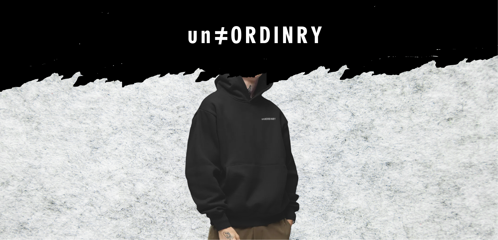
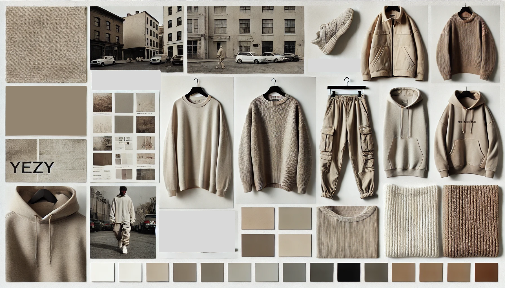
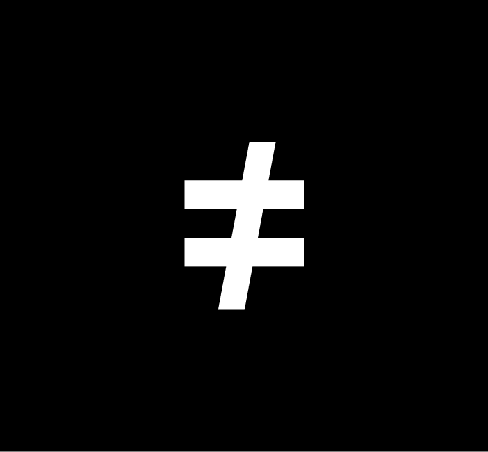
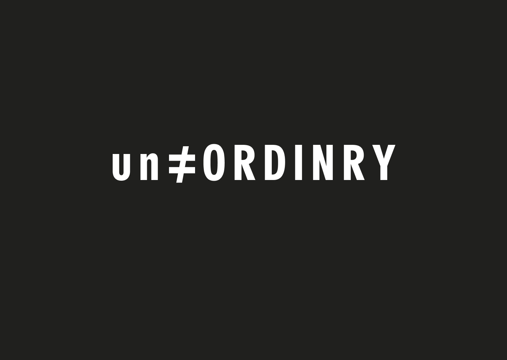
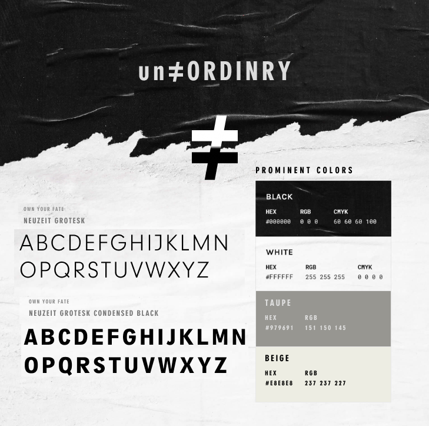

un≠ORDINRY and Screw Face Product were two clothing labels that came to me with the same brief: take us from idea to a live online store. They got the same five-phase engagement — platform research, brand strategy, identity, ecommerce design, launch. The second one moved faster than the first, because by then I’d already done the homework.

01 — The playbook
A clothing brand without a store is just a Pinterest board. Both of these projects had the same arc — from a founder with a name and a vision to a real Shopify store taking real orders. The point of running the playbook twice wasn’t to find new questions; it was to prove the answers held up.
01
Score Shopify, WooCommerce, BigCommerce on use, scale, cost, customisation, integrations.
02
Positioning, audience, the one sentence the brand has to live up to.
03
Mark, wordmark, palette, type, photographic direction. The brand book that documents it.
04
Site map, wireframes, product page, checkout flow, mobile-first UI.
05
Shopify build, theme customisation, payment, shipping, the public-facing store.
A streetwear label built around a single typographic idea: the “not-equal-to” sign as the brand mark. The “≠” carries the entire thesis — rejection of sameness, refusal to fit in — without needing a tagline to explain it. The wordmark and product range followed from there.
Still live — selling on ShopifyThree options scored across five dimensions: ease of use, scalability, cost, customisation, integrations. Shopify (39) beat WooCommerce (38) and BigCommerce (36) by the slimmest of margins — but won decisively on the two factors that mattered most for a small streetwear launch: ease of use and the depth of its app ecosystem.
WooCommerce was cheaper. BigCommerce scaled better. Shopify let the founder ship in weeks, not months — and that was the variable that mattered for a brand whose moment was now.
The audience: 18–28, urban, design-literate, allergic to anything that looks like “everyone has it.” The brand had to read as confident without being aggressive, and elevated without being precious. Yeezy-era tonal minimalism was the visual reference; the “own your fate” tagline was the verbal one.
The “≠” symbol did most of the work. Once that mark existed, every other decision — condensed sans-serif typography, taupe-and-black palette, oversized silhouettes — fell out of it.

The challenge with a typographic mark is that the wrong weight or proportion makes it look like an Instagram bio decoration. The version that shipped is heavy, evenly weighted, and proportioned so the “≠” reads first, before the eye registers the letters around it.



Neuzeit Grotesk for the wordmark and headers; Neuzeit Grotesk Condensed Black for the “own your fate” lockup. Palette held to four colours — black, white, taupe (#979691), beige (#E8E8E8) — deliberately narrow so the brand could expand without diluting.
The palette is the moodboard distilled. Tonal, urban, no decoration.
Shopify build, theme customised to the brand spec, product photography directed against the brand standard, payment and shipping configured for the home market with international expansion built in from day one.
The site has shipped product since launch. The hoodie pictured at the top of this page is the same one currently selling.
Visit unordinry.comA second streetwear engagement that ran the same five phases, but compressed. The platform decision was already settled (Shopify again, for the same reasons), so phase one was skipped entirely and the engagement went straight to brand identity and store build.
Store retired — brand work shown for portfolio
The founder wanted a brand that read as gritty, rebellious, Toronto-coded — the kind of label you discover on someone’s feed before it’s in any retailer. The brief named “SFP” as the lockup and asked for a mark that hid an angry face inside the letterforms.
The challenge was making that idea legible without it tipping into novelty. The version that shipped reads as a hand-drawn signature first; the face only becomes obvious on second look.
Helvetica Neue for type — deliberately neutral, so the logo could carry all of the personality. A four-colour palette: black, white, an orange accent (#DE8500), and a coral red (#EA474E) for moments of intensity. Both accents pull from Toronto sports-culture references without being literal about it.


A small site, scoped tight: home, collections (hoodies, oversized tees, hats), order tracking, contact, and shipping policy. The site map below was built before any UI work, so the IA could be reviewed and approved before the visual debate started.
Front-loading structure saved a round of revisions later. The brand-and-website spec was approved in two reviews, not five.

Honest disclosure
The Screw Face Product Shopify store is no longer online. Brands close for many reasons that have nothing to do with the design work — founders pivot, rebrand, or move on to other projects. The brand identity and the launch site shown here were delivered in full and live in production for the engagement’s duration. The work itself is the artifact.
02 — Where they overlapped
Phase one of the Screw Face engagement was about three lines long. The platform research had already been done six months earlier for un≠ORDINRY, and Screw Face fit the same profile — small fashion brand, founder-led, mobile-first audience, needs to ship in weeks. Re-running a Shopify-vs-WooCommerce-vs-BigCommerce scoring exercise would have been performing rigour, not practising it.
Platform analysis. Brand-book template. Photographic direction structure. Shopify theme starting point. The deliverables that aren’t about the specific brand but about the category — reused as defaults, then tuned to fit.
Mark, wordmark, palette, type, audience persona, tagline, brand voice, store IA. Everything that is the brand — rebuilt from scratch every time, because if it’s reused, it stops being a brand.
Why this matters
Part of running a real practice is knowing what to copy from yourself. The first project costs a research phase; the second one shouldn’t. Charging the second client for the same audit would have been padding the bill. Instead, the time saved went into more iterations on the brand mark — which is where the brand actually lives or dies.
03 — Takeaway
Most agency brand work ends at the brand book. The handoff to the client is a PDF and a link to a font, and the brand either survives implementation or doesn’t. Running both of these projects through to a live Shopify store taught me that the brand’s survival depends on what happens after the brand book — whether the founder can ship product without re-asking what the primary CTA colour is supposed to be.
What I’d carry forward
Branding work in DTC is half identity and half operational scaffolding. The identity is the visible part — logo, palette, type, photo direction. The scaffolding is the invisible part — the brand book that an engineer can read, the Shopify theme that doesn’t need the designer in the room every time a new product gets added, the photographic guidelines that the founder can apply themselves on a phone. The clients who ship are the ones whose brand kit was built to be used, not just admired. That’s the test.